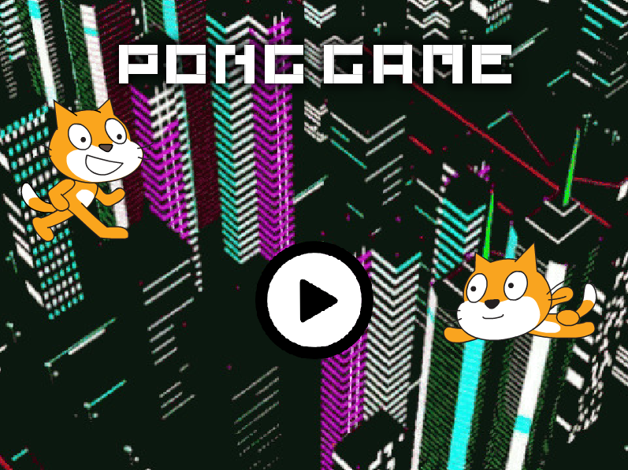
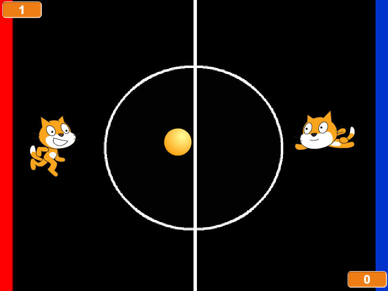
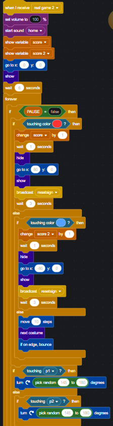

Scratch Game: Pong
Game Screenshots


About the game:
The game "Pong" has been a classic and early arcade game , only in
this version features a 2 player versus game, with the goal of the game
is for the first player to first achieve the score of 10 by scoring the
ball. The randomness effect is implmented in the ball itself when it
touches a sprite, randomly picks a direction between turning 145 to 180 degrees.
The only way you can lose the game is if you lose against your competitor,
so practice would be useful.
Game Reflection:
The reason me and partner choose to make this game because we wanted
to implment a game that was both easy and was 2-player. The inspiration
came from viewing other games in scratch, as there were a few 2 player pong
games on scratch. Two of the succesful aspects of the game in my opinion
is the aesthetics and the algorithm used in the ball. But some of the obstacles
that we came across with the game was how to add the scoring system and
feedback for the ball, the way overcame this is by adding the colors on the
side of the game (red and blue), in order to determine whether the ball has
reached the opponents area and consider it a point. For the ball, the randomness
that was added made it easier to point in the opposite direction the player
is pointing at.
Algorithm
This part of algorithm comes from the ball, and contains the reponses
for the sprites, the edge, the colors on each side of the game, pausing
of the game.
